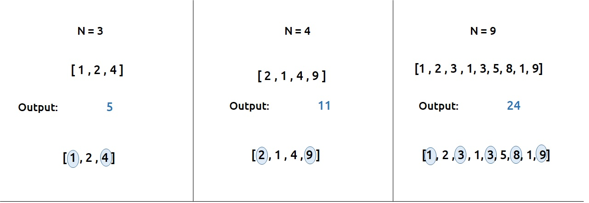
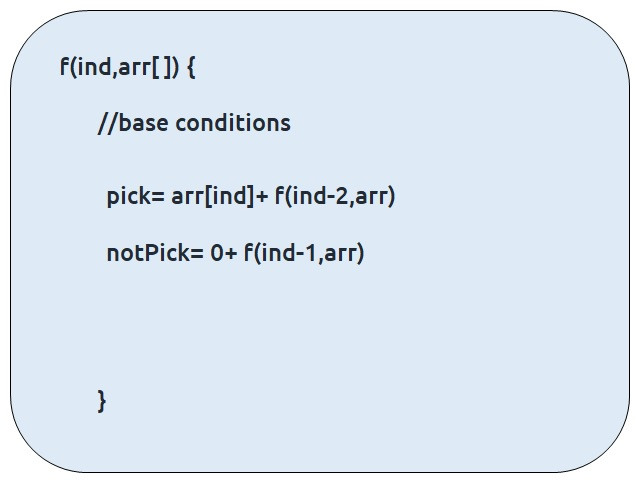
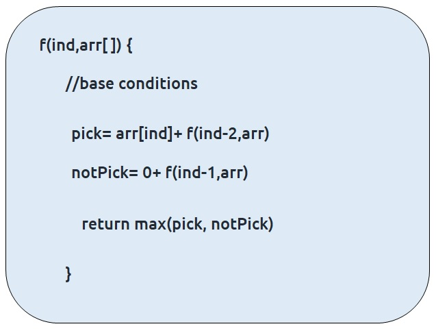
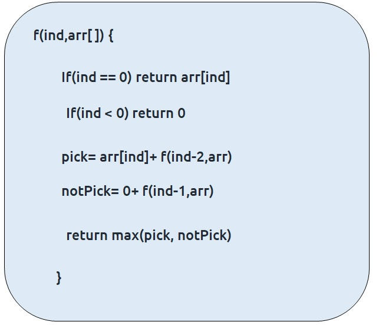
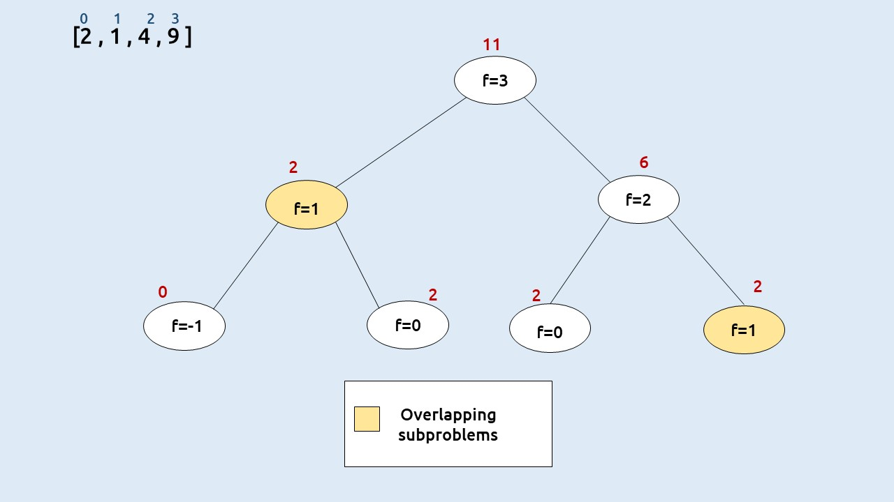

In this article we will solve the problem: Maximum sum of non-adjacent elements (DP 5)
Problem Statement:
Given an array of ‘N’ positive integers, we need to return the maximum sum of the subsequence such that no two elements of the subsequence are adjacent elements in the array.
Note: A subsequence of an array is a list with elements of the array where some elements are deleted ( or not deleted at all) and the elements should be in the same order in the subsequence as in the array.
Examples

Disclaimer: Don’t jump directly to the solution, try it out yourself first.
Memorization Approach
Algorithm / Intuition
As we need to find the sum of subsequences, one approach that comes to our mind is to generate all subsequences and pick the one with the maximum sum.
To generate all the subsequences, we can use the pick/non-pick technique. This technique can be briefly explained as follows:
- At every index of the array, we have two options.
- First, to pick the array element at that index and consider it in our subsequence.
- Second, to leave the array element at that index and not to consider it in our subsequence.
A more detailed explanation of this technique is taught in Recursion on subsequences. Readers are highly advised to watch that video.
First, we will try to form the recursive solution to the problem with the pick/non-pick technique. There is one more catch, the problem wants us to have only non-adjacent elements of the array in the subsequence, therefore we need to address that too.
Steps to form the recursive solution
We will use the steps mentioned in the article Dynamic Programming Introduction in order to form our recursive solution.
Step 1: Form the function in terms of indexes:
- We are given an array which can be easily thought of in terms of indexes.
- We can define our function f(ind) as : Maximum sum of the subsequence starting from index 0 to index ind.
- We need to return f(n-1) as our final answer.
Step 2: Try all the choices to reach the goal.
As mentioned earlier we will use the pick/non-pick technique to generate all subsequences. We also need to take care of the non-adjacent elements in this step.
- If we pick an element then, pick = arr[ind] + f(ind-2). The reason we are doing f(ind-2) is because we have picked the current index element so we need to pick a non-adjacent element so we choose the index ‘ind-2’ instead of ‘ind-1’.
- Next we need to ignore the current element in our subsequence. So nonPick= 0 + f(ind-1). As we don’t pick the current element, we can consider the adjacent element in the subsequence.
Our pseudocode till this step will be:

Step 3: Take the maximum of all the choices
As the problem statement asks to find the maximum subsequence total, we will return the maximum of two choices of step2.

Base Conditions
The base conditions for the recursive function will be as follows:
- If ind=0, then we know to reach at index=0, we would have ignored the element at index = 1. Therefore, we can simply return the value of arr[ind] and consider it in the subsequence.
- If ind<0, this case can hit when we call f(ind-2) at ind=1. In this case we want to return to the calling function so we simply return 0 so that nothing is added to the subsequence sum.
Our final pseudo-code will be:

Once we form the recursive solution, we can use the approach told in Dynamic Programming Introduction to convert it into a dynamic programming one.
Memoization approach
If we observe the recursion tree, we will observe a number of overlapping subproblems. Therefore the recursive solution can be memoized to reduce the time complexity.
Recursion tree diagram:

Note: To watch a detailed dry run of this approach, please watch the video attached below
Steps to convert Recursive code to memoization solution:
- Create a dp[n] array initialized to -1.
- Whenever we want to find the answer of a particular value (say n), we first check whether the answer is already calculated using the dp array(i.e dp[n] != -1 ). If yes, simply return the value from the dp array.
- If not, then we are finding the answer for the given value for the first time, we will use the recursive relation as usual but before returning from the function, we will set dp[n] to the solution we get.
Code
#include <bits/stdc++.h>
using namespace std;
// Function to solve the problem using dynamic programming
int solveUtil(int ind, vector<int>& arr, vector<int>& dp) {
// If the result for this index is already computed, return it
if (dp[ind] != -1)
return dp[ind];
// Base cases
if (ind == 0)
return arr[ind];
if (ind < 0)
return 0;
// Choose the current element or skip it, and take the maximum
int pick = arr[ind] + solveUtil(ind - 2, arr, dp); // Choosing the current element
int nonPick = 0 + solveUtil(ind - 1, arr, dp); // Skipping the current element
// Store the result in the DP table and return it
return dp[ind] = max(pick, nonPick);
}
// Function to initiate the solving process
int solve(int n, vector<int>& arr) {
vector<int> dp(n, -1); // Initialize the DP table with -1
return solveUtil(n - 1, arr, dp); // Start solving from the last element
}
int main() {
vector<int> arr{2, 1, 4, 9};
int n = arr.size();
// Call the solve function and print the result
cout << solve(n, arr);
return 0;
}
import java.util.*;
public class Main {
// This function recursively calculates the maximum possible sum
// by considering or not considering the current element.
static int solveUtil(int ind, int[] arr, int[] dp) {
// If the index is negative, there are no elements left to consider.
if (ind < 0) return 0;
// If the index is 0, there is only one element to consider, so return its value.
if (ind == 0) return arr[ind];
// If we have already calculated the result for this index, return it.
if (dp[ind] != -1) return dp[ind];
// Calculate the maximum sum by either picking the current element or not picking it.
int pick = arr[ind] + solveUtil(ind - 2, arr, dp);
int nonPick = solveUtil(ind - 1, arr, dp);
// Store the maximum of the two options in the dp array for future reference.
return dp[ind] = Math.max(pick, nonPick);
}
// This function initializes the dp array and calls the recursive solver.
static int solve(int n, int[] arr) {
int dp[] = new int[n];
// Initialize the dp array with -1 to indicate that values are not calculated yet.
Arrays.fill(dp, -1);
// Call the recursive solver for the last index (n-1).
return solveUtil(n - 1, arr, dp);
}
public static void main(String args[]) {
// Input array with elements.
int arr[] = {2, 1, 4, 9};
// Get the length of the array.
int n = arr.length;
// Call the solve function to find the maximum possible sum.
int result = solve(n, arr);
// Print the result.
System.out.println(result);
}
}
# Function to solve the problem using dynamic programming
def solveUtil(ind, arr, dp):
# Check if the solution for this index has already been calculated
if dp[ind] != -1:
return dp[ind]
# Base case: when the index is 0, return the value at that index
if ind == 0:
return arr[ind]
# Base case: when the index is negative, return 0 (out of bounds)
if ind < 0:
return 0
# Calculate the maximum value when picking the current element
pick = arr[ind] + solveUtil(ind - 2, arr, dp)
# Calculate the maximum value when not picking the current element
nonPick = 0 + solveUtil(ind - 1, arr, dp)
# Store the maximum of the two choices in the DP table
dp[ind] = max(pick, nonPick)
# Return the maximum value for the current index
return dp[ind]
# Function to solve the problem for the given array
def solve(n, arr):
# Initialize a DP table with -1 values to store intermediate results
dp = [-1 for i in range(n)]
# Call the recursive utility function to find the maximum value
return solveUtil(n - 1, arr, dp)
# Main function to test the code
def main():
arr = [2, 1, 4, 9]
n = len(arr)
# Call the solve function and print the result
print(solve(n, arr))
if __name__ == '__main__':
main()
// Define the function to solve the problem
function solveUtil(ind, arr, dp) {
// Check if the result for this index is already calculated
if (dp[ind] !== -1) return dp[ind];
// Base cases
if (ind === 0) return arr[ind];
if (ind < 0) return 0;
// Calculate the maximum value by either picking or not picking the current element
const pick = arr[ind] + solveUtil(ind - 2, arr, dp);
const nonPick = 0 + solveUtil(ind - 1, arr, dp);
// Store the result in the DP array and return it
return (dp[ind] = Math.max(pick, nonPick));
}
// Main function to solve the problem
function solve(n, arr) {
// Initialize a DP array with -1
const dp = new Array(n).fill(-1);
// Call the solveUtil function with the last index
return solveUtil(n - 1, arr, dp);
}
// Main program
function main() {
const arr = [2, 1, 4, 9];
const n = arr.length;
console.log(solve(n, arr)); // Print the result
}
// Call the main function to run the program
main();
Output: 11
Complexity Analysis
Time Complexity: O(N)
Reason: The overlapping subproblems will return the answer in constant time O(1). Therefore the total number of new subproblems we solve is ‘n’. Hence total time complexity is O(N).
Space Complexity: O(N)
Reason: We are using a recursion stack space(O(N)) and an array (again O(N)). Therefore total space complexity will be O(N) + O(N) ≈ O(N)
Tabulation Approach
Algorithm / Intuition
Tabulation approach
- Declare a dp[] array of size n.
- First initialize the base condition values, i.e dp[0] as 0.
- Set an iterative loop which traverses the array( from index 1 to n-1) and for every index calculate pick and nonPick
- And then we can set dp[i] = max (pick, nonPick)
Code
#include <bits/stdc++.h>
using namespace std;
// Function to solve the problem using dynamic programming
int solveUtil(int n, vector<int>& arr, vector<int>& dp) {
// Base case: If there are no elements in the array, return 0
dp[0] = arr[0];
// Iterate through the elements of the array
for (int i = 1; i < n; i++) {
// Calculate the maximum value by either picking the current element
// or not picking it (i.e., taking the maximum of dp[i-2] + arr[i] and dp[i-1])
int pick = arr[i];
if (i > 1)
pick += dp[i - 2];
int nonPick = dp[i - 1];
// Store the maximum value in the dp array
dp[i] = max(pick, nonPick);
}
// The last element of the dp array will contain the maximum sum
return dp[n - 1];
}
// Function to initiate the solving process
int solve(int n, vector<int>& arr) {
vector<int> dp(n, 0); // Initialize dp array with 0
return solveUtil(n, arr, dp);
}
int main() {
vector<int> arr{2, 1, 4, 9};
int n = arr.size();
// Call the solve function and print the result
cout << solve(n, arr);
return 0;
}
import java.util.*;
class TUF {
// This function uses dynamic programming to find the maximum possible sum of non-adjacent elements.
static int solveUtil(int n, int[] arr, int[] dp) {
// Initialize the dp array with the first element of the input array.
dp[0] = arr[0];
// Iterate through the input array to fill the dp array.
for (int i = 1; i < n; i++) {
// Calculate the maximum sum by either picking the current element or not picking it.
int pick = arr[i];
// If there are at least two elements before the current element, add the value from dp[i-2].
if (i > 1)
pick += dp[i - 2];
// The non-pick option is to use the maximum sum from the previous element.
int nonPick = dp[i - 1];
// Store the maximum of the two options in the dp array for the current index.
dp[i] = Math.max(pick, nonPick);
}
// The final element of the dp array contains the maximum possible sum.
return dp[n - 1];
}
// This function initializes the dp array and calls the solver function.
static int solve(int n, int[] arr) {
int dp[] = new int[n];
// Initialize the dp array with -1 to indicate that values are not calculated yet.
Arrays.fill(dp, -1);
// Call the solver function to find the maximum possible sum.
return solveUtil(n, arr, dp);
}
public static void main(String args[]) {
// Input array with elements.
int arr[] = {2, 1, 4, 9};
// Get the length of the array.
int n = arr.length;
// Call the solve function to find the maximum possible sum.
int result = solve(n, arr);
// Print the result.
System.out.println(result);
}
}
# Function to solve the problem using dynamic programming
def solveUtil(n, arr, dp):
# Initialize the first element of the DP table with the first element of the array
dp[0] = arr[0]
# Loop through the array starting from the second element
for i in range(1, n):
# Calculate the maximum value when picking the current element
pick = arr[i]
# Check if there are at least two elements before the current element
if i > 1:
pick += dp[i - 2]
# Calculate the maximum value when not picking the current element
non_pick = 0 + dp[i - 1]
# Store the maximum of the two choices in the DP table
dp[i] = max(pick, non_pick)
# Return the maximum value for the last index
return dp[n - 1]
# Function to solve the problem for the given array
def solve(n, arr):
# Initialize a DP table with -1 values to store intermediate results
dp = [-1 for _ in range(n)]
# Call the solveUtil function to find the maximum value
return solveUtil(n, arr, dp)
# Main function to test the code
def main():
arr = [2, 1, 4, 9]
n = len(arr)
# Call the solve function and print the result
print(solve(n, arr))
if __name__ == '__main__':
main()
// Function to solve the problem using dynamic programming
function solveUtil(n, arr, dp) {
// Initialize the first element of dp with the first element of the array
dp[0] = arr[0];
// Loop through the array to fill the dp array
for (let i = 1; i < n; i++) {
// Calculate the maximum value when picking the current element
let pick = arr[i];
if (i > 1) {
pick += dp[i - 2];
}
// Calculate the maximum value when not picking the current element
const nonPick = dp[i - 1];
// Store the maximum of pick and nonPick in dp
dp[i] = Math.max(pick, nonPick);
}
// Return the result, which is the last element of dp
return dp[n - 1];
}
// Main function to solve the problem
function solve(n, arr) {
// Initialize a DP array with the same length as the input array, filled with -1
const dp = new Array(n).fill(-1);
// Call the solveUtil function to find the maximum sum
return solveUtil(n, arr, dp);
}
// Main program
function main() {
// Input array
const arr = [2, 1, 4, 9];
const n = arr.length;
// Call the solve function and print the result
console.log(solve(n, arr));
}
// Call the main function to run the program
main();
Output: 11
Complexity Analysis
Time Complexity: O(N)
Reason: We are running a simple iterative loop
Space Complexity: O(N)
Reason: We are using an external array of size ‘n+1’.
Space Optimization Approach
Algorithm / Intuition
Part 3: Space Optimization
If we closely look at the values required at every iteration,
dp[i], dp[i-1], and dp[i-2]
we see that for any i, we do need only the last two values in the array. So is there a need to maintain a whole array for it?
The answer is ‘No’. Let us call dp[i-1] as prev and dp[i-2] as prev2. Now understand the following illustration.
- Each iteration’s cur_i and prev become the next iteration’s prev and prev2 respectively.
- Therefore after calculating cur_i, if we update prev and prev2 according to the next step, we will always get the answer.
- After the iterative loop has ended we can simply return prev as our answer.
Code
#include <bits/stdc++.h>
using namespace std;
// Function to solve the problem using dynamic programming
int solve(int n, vector<int>& arr) {
int prev = arr[0]; // Initialize the maximum sum ending at the previous element
int prev2 = 0; // Initialize the maximum sum ending two elements ago
for (int i = 1; i < n; i++) {
int pick = arr[i]; // Maximum sum if we pick the current element
if (i > 1)
pick += prev2; // Add the maximum sum two elements ago
int nonPick = 0 + prev; // Maximum sum if we don't pick the current element
int cur_i = max(pick, nonPick); // Maximum sum ending at the current element
prev2 = prev; // Update the maximum sum two elements ago
prev = cur_i; // Update the maximum sum ending at the previous element
}
return prev; // Return the maximum sum
}
int main() {
vector<int> arr{2, 1, 4, 9};
int n = arr.size();
// Call the solve function and print the result
cout << solve(n, arr);
return 0;
}
import java.util.*;
class TUF {
// This function finds the maximum possible sum of non-adjacent elements in an array
// using a more space-efficient dynamic programming approach.
static int solve(int n, int[] arr) {
// Initialize variables to keep track of the maximum sums at the current and previous positions.
int prev = arr[0];
int prev2 = 0;
// Iterate through the array starting from the second element.
for (int i = 1; i < n; i++) {
// Calculate the maximum sum by either picking the current element or not picking it.
int pick = arr[i];
// If there are at least two elements before the current element, add the value from prev2.
if (i > 1)
pick += prev2;
// The non-pick option is to use the maximum sum from the previous position.
int nonPick = prev;
// Calculate the maximum sum for the current position and update prev and prev2.
int cur_i = Math.max(pick, nonPick);
prev2 = prev;
prev = cur_i;
}
// The 'prev' variable now holds the maximum possible sum.
return prev;
}
public static void main(String args[]) {
// Input array with elements.
int arr[] = {2, 1, 4, 9};
// Get the length of the array.
int n = arr.length;
// Call the solve function to find the maximum possible sum.
int result = solve(n, arr);
// Print the result.
System.out.println(result);
}
}
# Function to solve the problem of finding the maximum sum of non-adjacent elements in an array
def solve(n, arr):
# Initialize variables to keep track of the previous maximum and the one before that
prev = arr[0] # Initialize with the first element of the array
prev2 = 0 # Initialize with 0 because there is no element before the first
# Loop through the array starting from the second element
for i in range(1, n):
# Calculate the maximum value when picking the current element
pick = arr[i]
# Check if there are at least two elements before the current element
if i > 1:
pick += prev2
# Calculate the maximum value when not picking the current element
non_pick = 0 + prev
# Calculate the maximum value for the current index
cur_i = max(pick, non_pick)
# Update the 'prev' and 'prev2' variables for the next iteration
prev2 = prev
prev = cur_i
# Return the maximum value for the last index, which represents the solution
return prev
# Main function to test the code
def main():
arr = [2, 1, 4, 9]
n = len(arr)
# Call the solve function and print the result
print(solve(n, arr))
if __name__ == "__main__":
main()
// Function to solve the problem
function solve(n, arr) {
// Initialize variables to keep track of the previous two maximum values
let prev = arr[0];
let prev2 = 0;
// Loop through the array starting from the second element
for (let i = 1; i < n; i++) {
// Calculate the maximum value when picking the current element
let pick = arr[i];
if (i > 1) {
pick += prev2;
}
// Calculate the maximum value when not picking the current element
const nonPick = prev;
// Calculate the current maximum value and update prev and prev2
const cur_i = Math.max(pick, nonPick);
prev2 = prev;
prev = cur_i;
}
// Return the final maximum value
return prev;
}
// Main program
function main() {
// Input array
const arr = [2, 1, 4, 9];
const n = arr.length;
// Call the solve function and print the result
console.log(solve(n, arr));
}
// Call the main function to run the program
main();
Output: 11
Complexity Analysis
Time Complexity: O(N)
Reason: We are running a simple iterative loop
Space Complexity: O(1)
Reason: We are not using any extra space.
Video Explanation
Special thanks to Anshuman Sharma and Abhipsita Das for contributing to this article on takeUforward. If you also wish to share your knowledge with the takeUforward fam, please check out this article